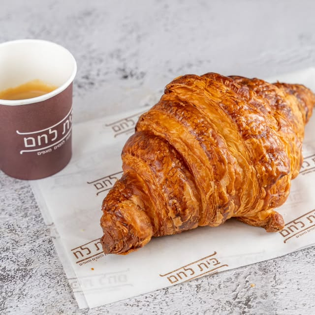
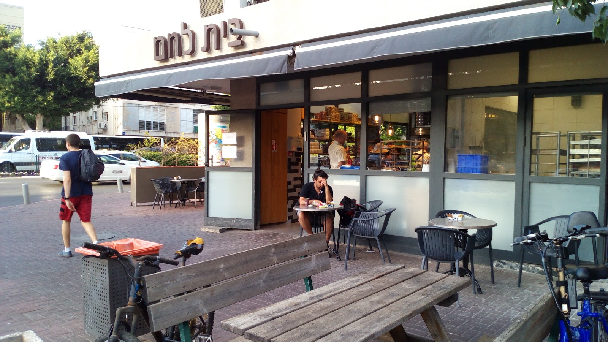
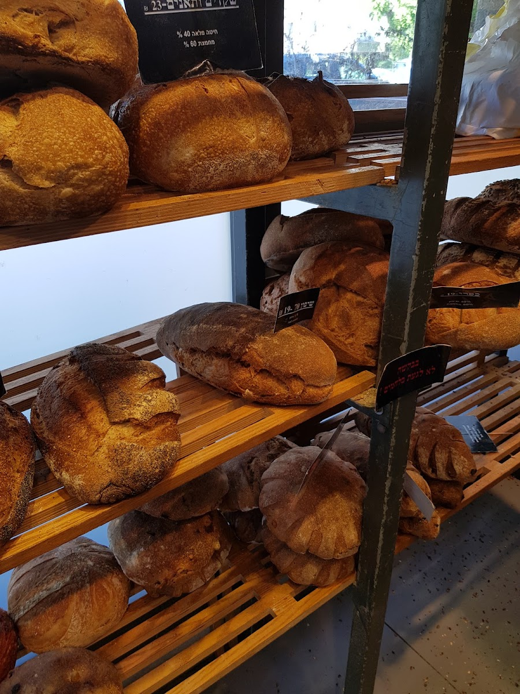
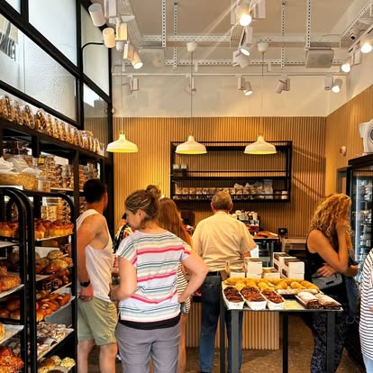
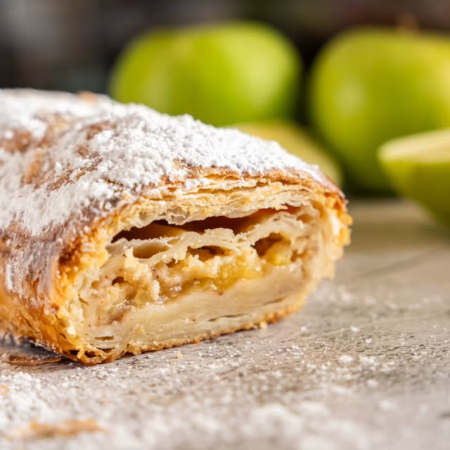
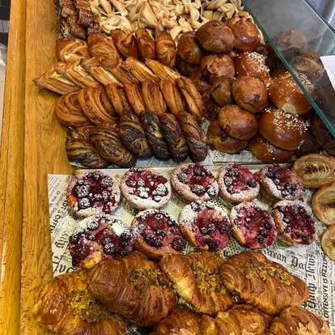

לחמים
מחמצת שאור, כפרי, שיפון ובגט — נאפים מדי בוקר מחדש

מאפייה בוטיק · תל אביב
אנחנו אופים עוגות, לחמים ומאפים בעבודת יד ומחומרים טבעיים.
וכמובן — מדייקים בקלאסיקות.





מי אנחנו
בית לחם היא מאפיית שכונה קטנה בלב תל אביב, בפינת ויצמן וארלוזורוב. כל יום, עוד לפני הזריחה, אופים אצלנו עוגות, לחמים ומאפים — בעבודת יד, מחומרים טבעיים בלבד, ובלי לוותר על הדיוק בקלאסיקות שכולנו אוהבים.
הריח של אפייה טרייה מלווה אתכם כבר מהכניסה, וכל מה שיוצא מהתנור מוכן להגיע אליכם עוד חם.
כל מאפה נאפה ביד, בלי קיצורי דרך
מרכיבים פשוטים ואיכותיים, כמו שצריך
מהמחמצת ועד עוגת הפרג המפורסמת
רגע לפני שמגיעים
כל התמונות מתוך העמודים הרשמיים שלנו באינסטגרם, בפייסבוק ובגוגל מפות
מה אומרים עלינו
איכות, לפחות על סמך העוגה שטעמתי, ברמה גבוהה מאוד. מדובר בעוגת פרג, שלכאורה היא עוגה פשוטה להכנה, אך מניסיון, מעטים הקונדיטורים שיודעים להכין אותה כהלכה. העוגה ענתה על כל הציפיות ואף מעבר לכך.
מאיר לוי-נחום · Google Maps
האוכל טרי וטעים עם מגוון רחב של מאפים ומאכלים מכל סוג. העובדים ממש נחמדים וחברותיים, נותנים חוויה מזמינה מאוד לאורך כל תהליך בחירת האוכל והקנייה.
נמרוד פרלשטיין · Google Maps
מקום מדהים! להיכנס לחנות קטנה וליהנות מהריח של האפייה. כשתיכנסו לרוב יקבל אתכם אדי, שהוא בנאדם נדיר!
שי קלאורה · Google Maps
יש פה מאפייה, הכל טרי וטעים. שווה לבוא לפה לקנות, לשבת ולאכול.
נטלי ישראלי · Google Maps
חנות לחמים ומאפים קטנה וטעימה, יש גם סנדוויצ'ים וקפה. צוות נעים, ויש כמה מקומות ישיבה בחוץ.
Anna Sch · Google Maps
כבוגר בית ספר לאפיה, המקום מקבל ממני הצטיינות.
David Ben Shoham · Google Maps
מתי ואיפה
ויצמן 20 פינת ארלוזורוב, תל אביב-יפו
פתוח כל יום עד השעה 21:00 (מומלץ לוודא שעות פתיחה מדויקות לפני הגעה)
בין השעות 08:00–15:00